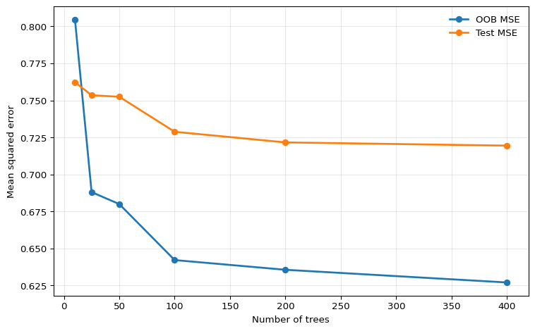

Under active development. A stable version is expected in November 2026. Feedback is very welcome.
11 Random Forests
11.1 Overview
Random forests solve the main weakness of single decision trees: high variance. A single tree can change sharply when the sample changes slightly, especially when early splits are unstable. Random forests reduce this instability by averaging many trees grown on perturbed versions of the data and by injecting additional randomness into the split search.
For econometricians, random forests are attractive when prediction is the goal and the conditional mean or event probability may depend on complicated nonlinearities and interactions. They work especially well on tabular data such as firm-level balance-sheet variables, household characteristics, or macro-financial predictors. At the same time, they remain nonparametric prediction tools rather than structural models: they do not extrapolate well, and their split structure should not be read causally.
11.2 Roadmap
- We begin with bagging and show why averaging unstable trees can reduce variance substantially.
- We then explain the additional random-feature step that turns bagging into a random forest.
- Next we study bootstrap sampling, out-of-bag evaluation, and the forest-as-weights interpretation.
- We then discuss the main hyperparameters and the bias-variance trade-offs they control.
- Finally, we summarize where random forests fit well in econometric work and where caution is needed.
11.3 From Bagging to Random Forests
Suppose we have a predictor \(\hat T(x)\) produced by a deep regression tree. If we grow many such trees on slightly different datasets and average them, we obtain the bagged predictor
\[ \hat f_B(x) = \frac{1}{B}\sum_{b=1}^B \hat T_b(x), \]
where \(\hat T_b(x)\) is the prediction of tree \(b\) and \(B\) is the number of trees.
Bagging stands for bootstrap aggregating:
- draw a bootstrap sample from the training data
- grow a tree on that sample
- repeat many times
- average the resulting predictions in regression, or average probabilities / vote in classification
The usual bagging version draws each bootstrap sample with replacement and with the same size as the original sample. A related variant, often called subagging, draws subsamples of size \(L<n\), usually without replacement. Both approaches create many perturbed training sets; the random forest then applies equal weights \(1/B\) to the resulting tree predictions.
The idea only works well when the base learner is unstable. Deep trees are exactly such learners: small changes in the sample can alter the early splits and therefore the whole fitted function. This high variance is a weakness for a single tree but an opportunity for averaging.
Variance of an Averaged Forest
Suppose the trees at a fixed point \(x\) satisfy
\[ \mathbb{V}[\hat T_b(x)] = \sigma^2(x), \qquad \text{Corr}(\hat T_b(x), \hat T_{b'}(x)) = \rho(x) \quad \text{for } b \neq b'. \]
Then the variance of the forest average is
\[ \mathbb{V}[\hat f_B(x)] = \sigma^2(x)\left[\rho(x) + \frac{1-\rho(x)}{B}\right]. \]
This shows two things:
- Averaging many trees reduces variance.
- The correlation \(\rho(x)\) between trees sets a lower bound on how much variance reduction is possible.
So a successful forest needs not just many trees, but also sufficiently different trees.
Why Bagging Alone Is Not Enough
If some predictors are very strong, then many bootstrap trees will keep splitting on the same variables near the root. That makes the trees highly correlated. Bagging alone therefore leaves too much common variation across trees.
Random forests address this directly. At each split, instead of considering all \(p\) predictors, the algorithm draws a random subset of size \(m\) and searches only within that subset. The best split among those \(m\) predictors is used.
This does two things at once:
- it lowers the correlation across trees by forcing them to try different split variables
- it may slightly weaken each individual tree because the globally best predictor is not always available
Random forests work because this correlation reduction usually dominates the loss in individual tree strength.
11.4 The Random-Forest Predictor
For regression, the random-forest predictor is
\[ \hat f_B(x) = \frac{1}{B}\sum_{b=1}^B \hat T_b(x). \]
For classification, each tree can produce either a class vote or an estimated leaf probability. In econometric applications, the probability forecast is usually more informative than the hard class label. A forest therefore often predicts
\[ \hat p_B(x) = \frac{1}{B}\sum_{b=1}^B \hat p_b(x), \]
where \(\hat p_b(x)\) is the event probability from tree \(b\).
This makes random forests natural competitors for problems such as:
- default prediction
- recession probability forecasting
- treatment assignment risk scoring
- nonlinear forecasting of inflation, output, or firm sales
11.5 Forest Weights and Distributional Outlook
A random forest can also be viewed as a data-adaptive local averaging estimator. Let \(L_b(x)\) denote the terminal leaf containing the forecast point \(x\) in tree \(b\), and let \(N_b(x)\) be the number of training observations in that leaf. The regression prediction can be written as
\[ \hat f_B(x) = \sum_{i=1}^n w_i(x)y_i, \qquad w_i(x) = \frac{1}{B}\sum_{b=1}^B \frac{1\{x_i \in L_b(x)\}}{N_b(x)}. \]
The weight \(w_i(x)\) is large when observation \(i\) often lands in the same terminal leaf as the forecast point. This is the forest analogue of a kernel estimator: the forest defines the neighborhood through its tree partitions rather than through a fixed distance metric.
This weighting view is also the bridge to more advanced forests. Quantile and distributional forests keep more than the leaf mean and use the same neighborhood weights to estimate a conditional distribution. Local-linear forests go in a different direction: they retain the forest neighborhood but fit a local linear model rather than a constant inside the neighborhood. The distributional and quantile random-forest section develops the distributional version.
The single tree reacts strongly to local sample noise. The forest remains nonlinear, but averaging across many trees stabilizes the fit.
11.6 Bootstrap Sampling and Out-of-Bag Evaluation
Each tree is grown on a bootstrap sample of size \(n\) drawn with replacement from the original sample. Because sampling is with replacement, some observations appear multiple times in a given tree’s training set and some observations are omitted.
For a particular observation \(i\), the probability of being omitted from a bootstrap sample is
\[ \left(1-\frac{1}{n}\right)^n \to e^{-1} \approx 0.368. \]
So roughly 36.8% of the trees leave a given observation out. Those trees form the out-of-bag set for that observation.
Out-of-Bag Predictions
For each observation \(i\), the OOB prediction is the average over trees that did not include \(i\) in their bootstrap sample:
\[ \hat f^{\text{OOB}}(x_i) = \frac{1}{|\mathcal{B}_i^{\text{OOB}}|} \sum_{b \in \mathcal{B}_i^{\text{OOB}}} \hat T_b(x_i). \]
This produces an approximately honest prediction for observation \(i\) because the trees contributing to that prediction were not trained on \(i\).
Under i.i.d. sampling, OOB error often behaves like an internal validation estimate. That is one reason forests are convenient in practice.
OOB Is a Validation Device, Not Magic
Out-of-bag error is useful because it comes “for free” during estimation, but it still reflects the sampling design built into the forest. If the data are serially dependent, clustered, revised over time, or otherwise non-i.i.d., standard OOB error can be misleading.
Question for Reflection
For a panel dataset of firms observed over time, which prediction target is standard OOB error closest to: new firms, new time periods, or new firm-time cells? What validation split would better match each target?
Suggested Answer
Standard OOB error is closest to validating randomly held-out firm-time rows, so it is most defensible for a target resembling new cells drawn from the same panel distribution. It is not a good proxy for predicting entirely new firms or future time periods if there is firm dependence or temporal dependence. New firms call for leave-firm-out validation, future periods call for forward or blocked time splits, and combined targets may require holding out both firms and time blocks.
/Users/onnokleen/.pyenv/versions/3.13.5/lib/python3.13/site-packages/sklearn/ensemble/_forest.py:611: UserWarning:
Some inputs do not have OOB scores. This probably means too few trees were used to compute any reliable OOB estimates.

The key pattern is not monotone improvement forever, but stabilization. Once enough trees have been added, the forest average has largely converged and additional trees mainly affect computation time.
11.7 Hyperparameters and Trade-Offs
Although forests are often robust, they still require tuning. The most important hyperparameters are the following.
Number of Trees
The number of trees \(B\) mainly controls Monte Carlo error in the forest average.
- More trees lower simulation noise and stabilize predictions.
- More trees do not usually create overfitting in the same way as adding parameters to OLS.
- After a point, gains are negligible and only computation rises.
Number of Candidate Features per Split
This is the parameter often called max_features or mtry.
- Smaller
max_featuresreduces correlation across trees and tends to lower variance. - Larger
max_featuresmakes each tree stronger but more similar to the others. - If one predictor is overwhelmingly strong, reducing
max_featurescan materially improve the ensemble by forcing other variables into the split search.
Common rules of thumb are to try roughly \(p/3\) candidate features per split for regression and roughly \(\sqrt{p}\) for classification. These are not econometric laws; they are starting values that should be checked with a validation design appropriate for the data structure.
Leaf Size and Tree Depth
Random forests often use fairly deep trees, but the leaf size still matters.
- Smaller leaves reduce bias but increase the variance of individual trees.
- Larger leaves smooth the prediction surface and can improve performance when the signal is weak or noisy.
Monotonicity Constraints in Some Implementations
Monotonicity constraints are not part of the classical random-forest theory developed in this chapter, but some modern implementations allow them. The idea is the same as in constrained boosting: if economic reasoning implies that a predictor should move the fitted outcome only upward or only downward, the ensemble can be restricted to respect that sign pattern. This can make a forest more credible when the unrestricted fit shows local reversals that are hard to defend economically.
The same warning applies as elsewhere: a monotonicity restriction is a predictive shape constraint, not a structural identification device. If the sign restriction is wrong or only locally valid, the forest can become systematically misspecified.
Practical Bias-Variance Summary
The forest design has two levers:
- Make each tree strong.
- Make the trees less correlated.
The best tuning balances those two goals rather than maximizing either one in isolation.
11.8 Econometric Interpretation and Limits
Random forests are particularly useful for prediction with many candidate interactions. They can uncover nonlinear combinations of predictors without the econometrician having to specify them manually. This is often valuable in cross-sectional or panel-style prediction tasks with rich covariate sets.
But several limits remain.
No Extrapolation
Like single trees, forests average leaf values. That means they remain local averaging estimators. If the forecast point lies outside the historical support of the training data, the forest cannot extrapolate a trend; it returns a weighted average of observed outcomes from nearby leaves.
Interpretation Is Predictive, Not Structural
A variable that appears important for a forest is not necessarily a causal driver. The forest is optimized for prediction, not identification.
Standard OOB Evaluation Can Fail for Dependent Data
In macroeconomic and financial forecasting, standard bootstrapping breaks temporal dependence and can leak future information into the effective training sample. In such settings, time-aware validation remains essential.
Econometric Warning
For forecasting problems with serial dependence, publication lags, and real-time data revisions, standard random-forest OOB error is not an honest real-time performance measure. Use rolling or expanding validation windows that replicate the actual information set at the forecast origin.
Variable Importance: Useful but Imperfect
Forests are often accompanied by variable-importance measures. These can be useful screening devices, but they have limitations:
- impurity-based importance can favor variables with many possible split points
- importance does not measure causal effect size
- correlated predictors can split the signal across variables and make each one look less important than it truly is
Permutation importance is often more informative than raw impurity reductions, but even then the interpretation remains predictive rather than structural.
11.9 Summary
Key Takeaways
- A random forest averages many randomized trees and primarily improves on a single tree by reducing variance.
- The variance reduction depends not only on the number of trees, but also on how correlated the individual trees are.
- Random feature selection is crucial because it decorrelates trees that would otherwise keep splitting on the same dominant predictors.
- Out-of-bag predictions provide an internal validation device under i.i.d. sampling, but they are not automatically reliable for dependent time-series data.
- Random forests are powerful nonlinear prediction tools for tabular data, but they remain local averaging estimators and should not be interpreted causally.
Common Pitfalls
- Thinking that more trees always fix a poorly tuned forest. If the trees are highly correlated, averaging has limited payoff.
- Treating OOB error as automatically valid for time-series forecasting.
- Reading variable importance as a causal ranking.
- Expecting a forest to extrapolate outside the support of the training data.
- Setting
max_featuresso high that every tree becomes nearly identical.
11.10 Exercises
Exercise 11.1: Variance Reduction in a Random Forest
Fix a point \(x_0\). Suppose the prediction of tree \(b\) at \(x_0\) is \(T_b\), with
\[ \mathbb{E}[T_b] = \mu, \qquad \mathbb{V}[T_b] = \sigma^2, \]
and for all \(b \neq b'\),
\[ \text{Corr}(T_b,T_{b'}) = \rho. \]
Define the forest predictor as
\[ \bar T_B = \frac{1}{B}\sum_{b=1}^B T_b. \]
- Show that \(\mathbb{E}[\bar T_B] = \mu\).
- Derive the variance formula \[ \mathbb{V}[\bar T_B] = \sigma^2\left[\rho + \frac{1-\rho}{B}\right]. \]
- Let \(\sigma^2 = 9\), \(\rho = 0.2\), and \(B=100\). Compute the variance of a single tree and the variance of the forest. By what percentage is variance reduced?
- What is the limit of \(\mathbb{V}[\bar T_B]\) as \(B \to \infty\)? Explain why this makes
max_featuresimportant in practice.
Exam level: suitable as-is. The exercise combines a nontrivial variance derivation with interpretation of the random-feature mechanism.
Hint for Part 1
Use linearity of expectation.
Hint for Part 2
Start from
\[ \mathbb{V}\left[\frac{1}{B}\sum_{b=1}^B T_b\right] = \frac{1}{B^2}\left( \sum_{b=1}^B \mathbb{V}[T_b] + \sum_{b \neq b'} \text{Cov}(T_b,T_{b'}) \right). \]
Then use \(\text{Cov}(T_b,T_{b'}) = \rho \sigma^2\).
Hint for Part 3
First compute the bracketed term. Then compare with the single-tree variance \(9\).
Solution
Part 1: Expectation
By linearity of expectation,
\[ \mathbb{E}[\bar T_B] = \mathbb{E}\left[\frac{1}{B}\sum_{b=1}^B T_b\right] = \frac{1}{B}\sum_{b=1}^B \mathbb{E}[T_b] = \frac{1}{B}\sum_{b=1}^B \mu = \mu. \]
So averaging does not change the mean prediction.
Part 2: Variance
Using the variance-of-a-sum formula,
\[ \mathbb{V}[\bar T_B] = \frac{1}{B^2} \left( \sum_{b=1}^B \mathbb{V}[T_b] + \sum_{b \neq b'} \text{Cov}(T_b,T_{b'}) \right). \]
There are \(B\) variance terms, each equal to \(\sigma^2\), and \(B(B-1)\) covariance terms, each equal to \(\rho \sigma^2\). Therefore
\[ \mathbb{V}[\bar T_B] = \frac{1}{B^2}\left(B\sigma^2 + B(B-1)\rho \sigma^2\right). \]
Factor out \(\sigma^2\):
\[ \mathbb{V}[\bar T_B] = \sigma^2 \frac{B + B(B-1)\rho}{B^2} = \sigma^2\left(\frac{1}{B} + \frac{B-1}{B}\rho\right). \]
Rewriting gives
\[ \mathbb{V}[\bar T_B] = \sigma^2\left[\rho + \frac{1-\rho}{B}\right]. \]
Part 3: Numerical example
For a single tree,
\[ \mathbb{V}[T_b] = 9. \]
For the forest,
\[ \mathbb{V}[\bar T_{100}] = 9\left[0.2 + \frac{0.8}{100}\right] = 9(0.208) = 1.872. \]
So the variance falls from \(9\) to \(1.872\).
The percentage reduction is
\[ \frac{9 - 1.872}{9} \times 100\% = 79.2\%. \]
Part 4: Infinite-forest limit
As \(B \to \infty\),
\[ \mathbb{V}[\bar T_B] \to \sigma^2 \rho. \]
So averaging can eliminate the idiosyncratic part of tree variance, but not the common correlated part. This is why max_features matters: by forcing different trees to consider different candidate predictors at each split, it lowers \(\rho\) and therefore lowers the asymptotic variance floor of the forest.
Exercise 11.2: Out-of-Bag Predictions and Dependent Data
Suppose a random forest is trained on a sample of size \(n\), and each tree uses a bootstrap sample of size \(n\) drawn with replacement from the original data.
- Show that the probability a fixed observation \(i\) is not selected in one bootstrap sample is \[ \left(1-\frac{1}{n}\right)^n, \] and conclude that this converges to \(e^{-1}\) as \(n \to \infty\).
- A forest uses \(B=500\) trees. Approximately how many trees are expected to leave observation \(i\) out-of-bag?
- Explain why OOB prediction can serve as an internal validation device under i.i.d. sampling.
- You are forecasting quarterly inflation with a long macroeconomic time series. Explain why standard OOB error is not a fully honest evaluation method in this setting, and suggest a more appropriate validation design.
Exam level: suitable as-is. Parts 1-2 are derivational, Part 3 clarifies the OOB logic, and Part 4 tests the key econometric caveat about dependent data.
Hint for Part 1
In one draw, the chance of not selecting observation \(i\) is \(1-1/n\). The bootstrap sample contains \(n\) independent draws with replacement.
Hint for Part 2
Use the approximation from Part 1: the OOB probability is about \(0.368\).
Hint for Part 4
Ask whether a bootstrap resample respects time order, publication lags, and real-time information sets.
Solution
Part 1: OOB probability
In a single bootstrap draw, the probability of not selecting observation \(i\) is
\[ 1 - \frac{1}{n}. \]
Because the bootstrap sample contains \(n\) draws with replacement, the probability that \(i\) is never selected is
\[ \left(1-\frac{1}{n}\right)^n. \]
Using the standard limit,
\[ \left(1-\frac{1}{n}\right)^n \to e^{-1} \approx 0.368 \qquad \text{as } n \to \infty. \]
So roughly 36.8% of trees leave any given observation out.
Part 2: Expected number of OOB trees
If \(B=500\), the expected number of trees for which observation \(i\) is OOB is approximately
\[ 500 \times e^{-1} \approx 500 \times 0.368 = 184. \]
So observation \(i\) receives about 184 OOB predictions on average.
Part 3: Why OOB works under i.i.d. sampling
For observation \(i\), the OOB prediction averages only trees that were not trained on \(i\). That makes the prediction approximately out-of-sample for that observation. Repeating this over all observations yields a validation-style error estimate without creating a separate holdout set.
Part 4: Why OOB can fail in macroeconomic forecasting
In a macroeconomic time series, standard bootstrap resampling does not preserve temporal ordering, dependence, publication delays, or real-time data vintages. A tree used in the OOB prediction for date \(t\) may still have been trained on observations from dates after \(t\), which would not have been available in real time. This makes standard OOB error optimistic.
A more appropriate design is rolling or expanding-window validation, where each training set only uses information available up to the forecast origin and the validation set lies strictly in the future.